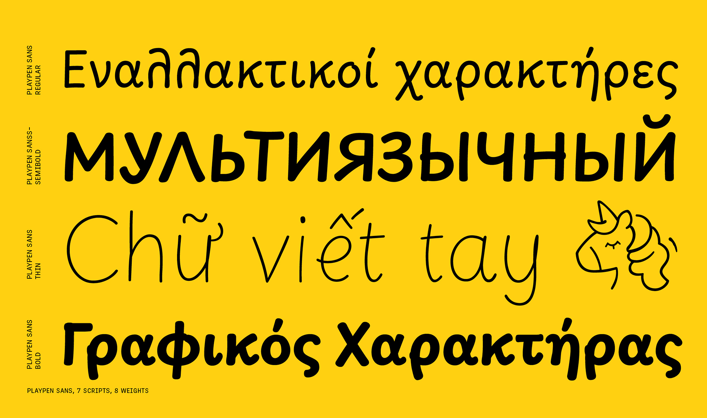

Playpen Sans was designed by TypeTogether after over two years of primary research into handwriting education for Latin-based languages, available at primarium.info.
It is a variable font with a weight range from Thin (100) to ExtraBold (800) and supports three different writing systems—Latin, Greek, and Cyrillic—that cover over 700 Latin languages, including Vietnamese and 619 Sub-Saharan African languages, 54 Cyrillic languages, and Greek, along with 26 emoji. The Playpen Sans superfamily also includes an Arabic (Playpen Sans Arabic), Devanagari (Playpen Sans Deva), Hebrew (Playpen Sans Hebrew), and Thai (Playpen Sans Thai) fonts that expand the language support of the system.
Playpen Sans provides seven different glyphs for each character that are automatically applied as you type, using a built-in shuffler that both ensures variety and avoids repetition. This adds to the overall organic, spontaneous, and authentic feel of the handwritten style.
To contribute, see github.com/TypeTogether/Playpen-Sans

Some typefaces do more than one thing well, and others excel at just one thing. The Playpen Sans font family excels at imitating casual handwriting with a completely natural look — the aesthetic form of something made by hand – combined with all the functionality of a professional typeface.
The font world has a general tension between what’s organic and what’s digital. When scribbling a quick note, written letters have slight differences, but all look similar because they come from the same person. Digital typefaces are instead almost always very consistent — each character is exactly the same, every time you type it.
The goal of a typeface that is both casual in look and digital in nature is to appear authentically human within the bounds of digital technology: A typeface with a set of characters that are “the same, but different” that carries the authenticity which everyone craves. The main problem with typical casual fonts is not having enough alternate characters to look real. When a family has more than one alternate, another problem arises in controlling how and when a character gets replaced.
To solve these problems, Playpen Sans was designed with seven versions of each character, plus a novel and automatic shuffler, so no single shape is repeated in close proximity. The result is text with spontaneous inconsistencies that feel fun and organic… all the benefits of a modern, professional typeface that looks natural.
The family was made for non-designers, and it shines within short, informal settings: greeting cards and invitations; casual signs; fun documents, and of course, children’s books and educational materials, comic books, and graphic novels. The straight and curved endings for ‘i, l, y’, the two-story ‘a’, and optional shapes for ‘f, G, I, M’ are notable features.
Playpen Sans combines technological and aesthetic values, showing the best of both worlds with digital capabilities and a casual, handmade look. Is it spontaneous? Is it authentic? Thankfully, yes, and yes.

Greek and Cyrillic follow the same principles as Latin, giving the idea that they are all written by the same person. All the writing systems approach letterform construction with casual and continuous strokes; typical stroke boundaries are not always respected due to the relaxed mood of writing; and the in-strokes and out-strokes allow for a natural transition from one letter to the other. Each is a set of clear letterforms that are easy to write and recognize. The design forms a bridge between handwritten and typographic letters, friendly to both little readers and adults.
Playpen Sans has emojis for breezy and encouraging uses, that each match the eight named weights of the Latin. Find here the list of all the emojis available. You can copy and paste them into your document editor when using the font. 😉
🌞 😍 ☠ ☹ 😉 ✏ 📖 🏠 ✍ 🧩 🦖 🪐 ✈ 🌠 🎂 🎨 📣 👆 👍 👎 🎯 🪫 ✅ ❌ 🏅 🦄